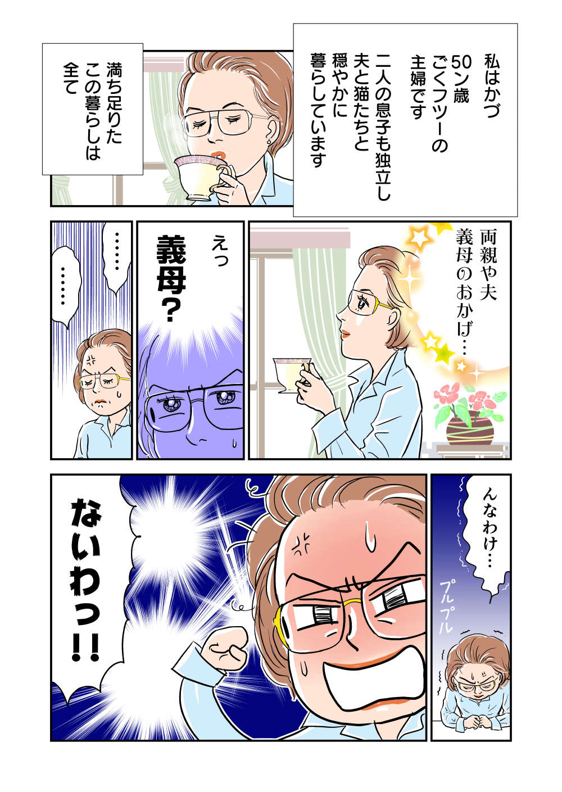

Kazu-san 是一位 50 岁的家庭主妇。她即将步入老年，正经历着“幸福无敌”，有家人支持，身体健康，退休金充足！然而，为了走到这一步，我必须每天与婆婆、父母、丈夫和其他亲戚进行斗争。刚刚加入家族的少年英雄“一”是如何战斗并取得胜利的？ Mainichi ga Hakken Net 的热门系列终于被改编成漫画了！ 以令和家庭主妇为对象的《红色家族斗争回忆录》第一集就从这里开始。
据说和桑年轻时曾就读于护士学校。医院里的每个人都依赖我，我的生活很充实。然而，当他开始照顾某个病人时，事情就完全改变了。那时，和先生还什么都不知道。没办法，花了我一生的时间「《传奇之战》已经我想知道是不是已经开始了...
